Praxis I / Alpha Release Design
Lighting in Chestnut Residence Double Rooms
Design recommendation for roommates on different sleep and study schedules: four concepts, proxy illuminance testing in a real dorm, and a final pick — the Bed Dome Cover.
What this project was
Praxis I asked us to treat a real stakeholder problem like engineers, not decorators. Our team looked at University of Toronto Chestnut Residence double rooms: two first-year students share roughly 350 square feet (33 m²), each with a bed–desk pair, and two non-dimmable ceiling lights over the desks. When one roommate studies late, light from their fixture bleeds across the room and onto the other’s bed. Sleep research recommends keeping melanopic illuminance at the eye below about 1 lux for rest; studying comfortably wants well above 300 lux at the work surface. Those numbers do not coexist in one undivided room without a product intervention.
We rescoped mid-project to prioritize the resting roommate as the primary stakeholder. The studying roommate and Residence Life (no permanent room modifications) stayed in the picture, but every Pugh comparison weighted direct and indirect light at the bed highest. After diverging on four concepts and proxy-testing three physical prototypes plus a bathroom-door scenario, we recommended a Bed Dome Cover: a foldable canopy on the bed frame, blackout fabric, and clamps with rubber cushions so nothing scars the metal headboard.
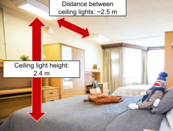
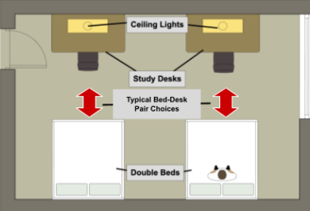
Stakeholders
We prioritized the resting roommate as the primary stakeholder. The studying roommate and Residence Life (no permanent room modifications) stayed in scope, but every comparison weighted light at the bed highest.
| Stakeholder | Expectation and impact |
|---|---|
| Resting roommate (primary) | Expectation: a lighting environment as dark as possible (<1 lux). Rest quality is greatly affected by room lighting; minimizing light exposure is prioritized. |
| Studying roommate (secondary) | Expectation: sufficient luminance for studying (>300 lux). Productivity depends on adequate room lighting. Not the priority, but remains an important consideration in the design process. |
| Residence Life Office (secondary) | Expectation: compliance with the Chestnut Residence Occupancy Agreement and other guidelines. |
| Residence cleaning staff (secondary) | Expectation: minimal obstruction or inconvenience to routine room service and cleaning. |
NGOs, requirements, and evaluation criteria
The primary need, goals, and objectives for our design are summarized in the diagram below. Chestnut roommate needs were translated into measurable requirements and evaluation criteria (ECs) in Tables 2a–2c. During rescoping we dropped Goal 2 (study-side illuminance) and focused on the sleeping roommate.
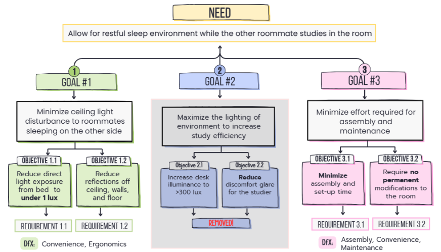
| Requirements | Justification | Metric | Evaluation criteria |
|---|---|---|---|
| Rq. 1.1: Reduce direct light exposure from the sleeper’s head position on the bed opposite the light source to under 1 lux. | Medical guidance: maximum ambient melanopic EDI of 1 lx at the eye to avoid melatonin suppression and sleep disturbance [3]. | Illuminance (lux) | EC 1.1: Direct illuminance from the bed opposite the light source, toward the light source — the lower the better. |
| Rq. 1.2: Reduce reflections off the ceiling directly above the bed to below 1 lux. | Appendix A.8 (ISO/CIE 8995-1). | Illuminance (lux) | EC 1.2: Indirect illuminance from the bed to the ceiling directly above — the lower the better. |
| Requirements | Justification | Metric | Evaluation criteria |
|---|---|---|---|
| Rq. 3.1: Minimize setup time for routine use. | ISO 9241-11 ergonomics: efficiency reduces time to achieve intended outcomes (Appendix A.1). | Time (seconds) to set up for routine use | EC 3.1: Approximate deploy time from stowed state — the lower the better. |
| Rq. 3.2: No permanent modifications to the room. | Chestnut Occupancy Agreement 2025–26: residents must not alter the premises [2]. | None (see Appendix F for “permanent”) | None |
| Rq. 3.3: Design weight under 7 kg. | HSE manual handling: 7 kg is the lower threshold for handling from mid–lower-leg height [6] (Appendix A.9). | Total weight (kg) | EC 3.2: The lighter the design, the better. |
| Requirements | Justification | Metric | Evaluation criteria |
|---|---|---|---|
| Rq. 4.1: Fit within one roommate’s half of a typical Chestnut double room (16.25 m²) (Appendix D). | Necessary for use in Chestnut doubles without impeding the roommate’s personal space. | Floor area when in use (m²) (Toronto municipal code [7]) | EC 4.1: The less space occupied when in use, the better. |
Four design concepts
After classical brainstorming and a morphological chart (breaking anchoring on “make sleeping area dark”), we converged on four main concepts for proxy testing and comparison.
Bed dome cover
Inspired by a baby stroller canopy, a lightweight foldable frame and blackout fabric form a darkened “pod” around the sleeper’s upper body. Two clamps secure the cover to the Chestnut bed frame without permanent modifications.
Lamp coverings
A hood around the ceiling fixture directs most light onto the desk instead of across the room. Clip-on or suction mounting allows removal without damaging the room.
Retractable room divider
Two posts and a blackout fabric panel (airport stanchion logic, ~1.8 m high) pull out between bed and desk areas. When stowed, floor occupancy stays low; when extended, the panel blocks light bleed to the sleeper.
Bathroom study extension
Moves the studying roommate into the bathroom so the main room stays dark: clip-on foldable tables at sink and toilet, a removable seat cushion, and optional task light on the towel rack. This concept emerged after rescoping to prioritize the resting roommate.
- Bed dome cover
- Lamp coverings
- Retractable room divider
- Bathroom study extension
Proxy testing in a real dorm
UNEP guidance calls for integrating-sphere or goniophotometer tests — not feasible in Praxis I. We used a Google Pixel 7 (VD6283TX ambient light sensor) and the LightMeter Android app in a Chestnut double room at night with curtains closed, as a proxy for standardized dark-room measurements while staying representative of real use.
| Measurement equipment | Replacing | Justification |
|---|---|---|
| VD6283TX ambient light sensor (Google Pixel 7 smartphone) | V-λ corrected goniophotometer (Appendix A.2) | Factory-calibrated sensor adequately resembles standardized goniophotometers (Appendix A.2). |
| LightMeter Android application | Direct data from the light sensor | Ensures accurate luminance readouts from the sensor. |
| Chestnut double room at night, curtains closed | Standardized testing room (blacked out) (Appendix A.3) | Approximates a standardized room and augments lab methods by confirming feasibility in real dorm conditions. |
Functional prototypes
- Bed dome cover: Lightweight blanket (143.5 × 70 cm) at a 45° slant over the bed to approximate the foldable fabric cover.
- Lamp cover: Towel taped to a Chestnut ceiling light to approximate the flexible hood and non-permanent attachment.
- Retractable room divider: Chestnut curtain (~1.8 m high, 2 m wide) held at the room center, top touching the ceiling, to partition the space.
- Bathroom study extension: No physical prototype — illuminance depends only on how far the bathroom door is opened.
For each test we placed the phone at the approximate head location of the sleeper — about 30 cm from the headboard — to simulate light incident on the sleeper’s field of vision. We recorded direct illuminance toward the active ceiling light, indirect illuminance toward the ceiling above the bed, and (for wall-facing sleepers) the nearest wall.
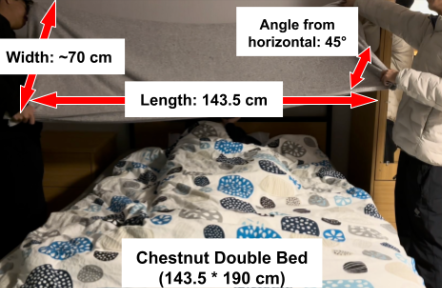
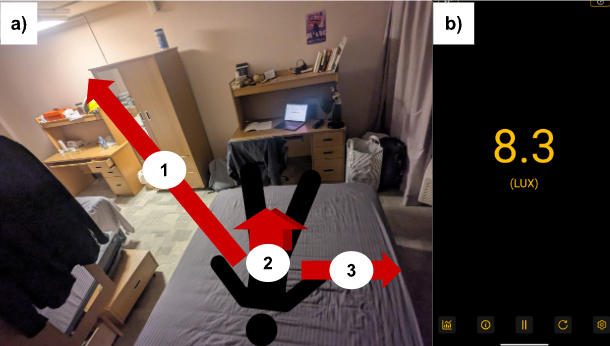
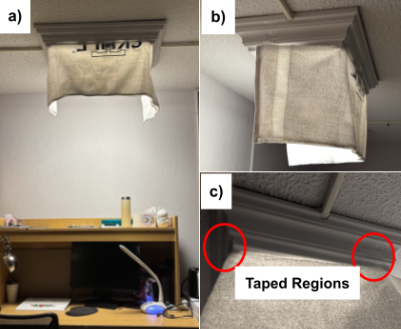
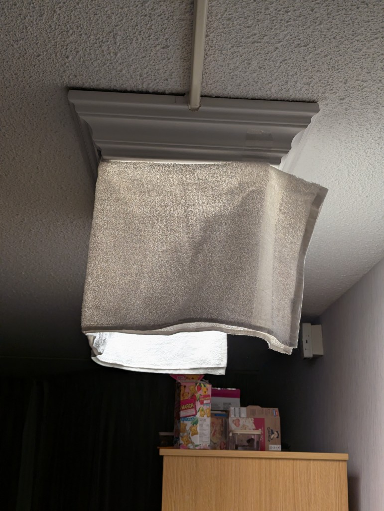
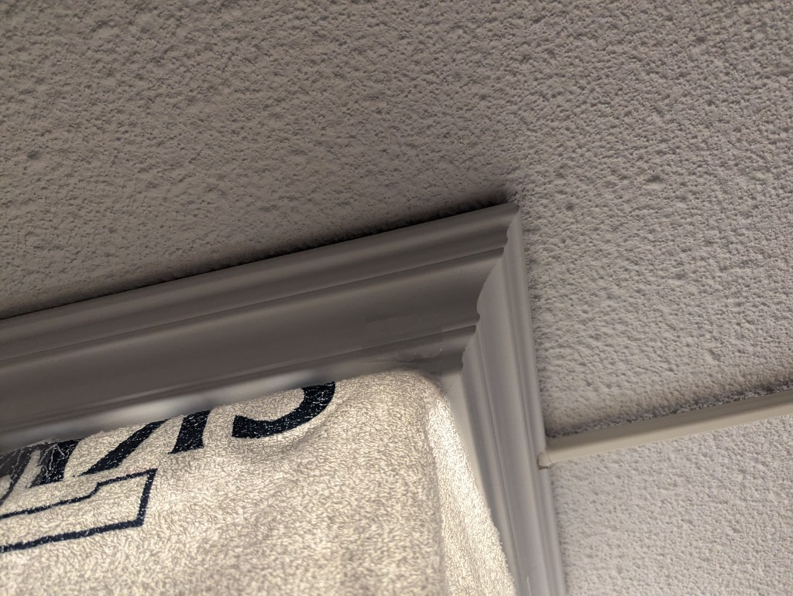
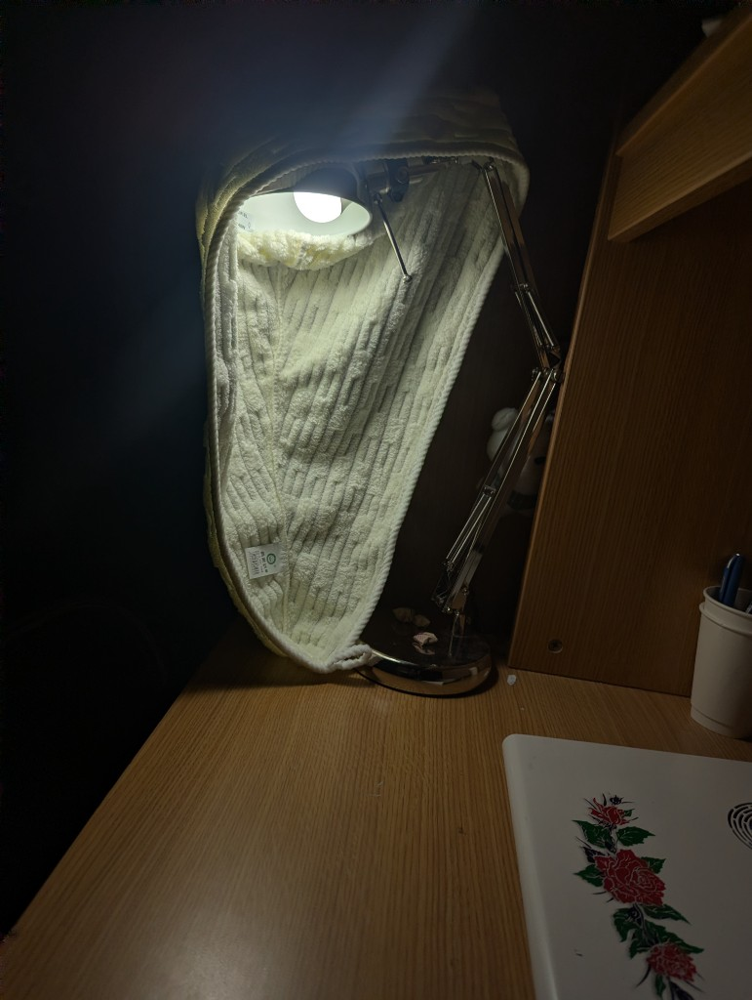
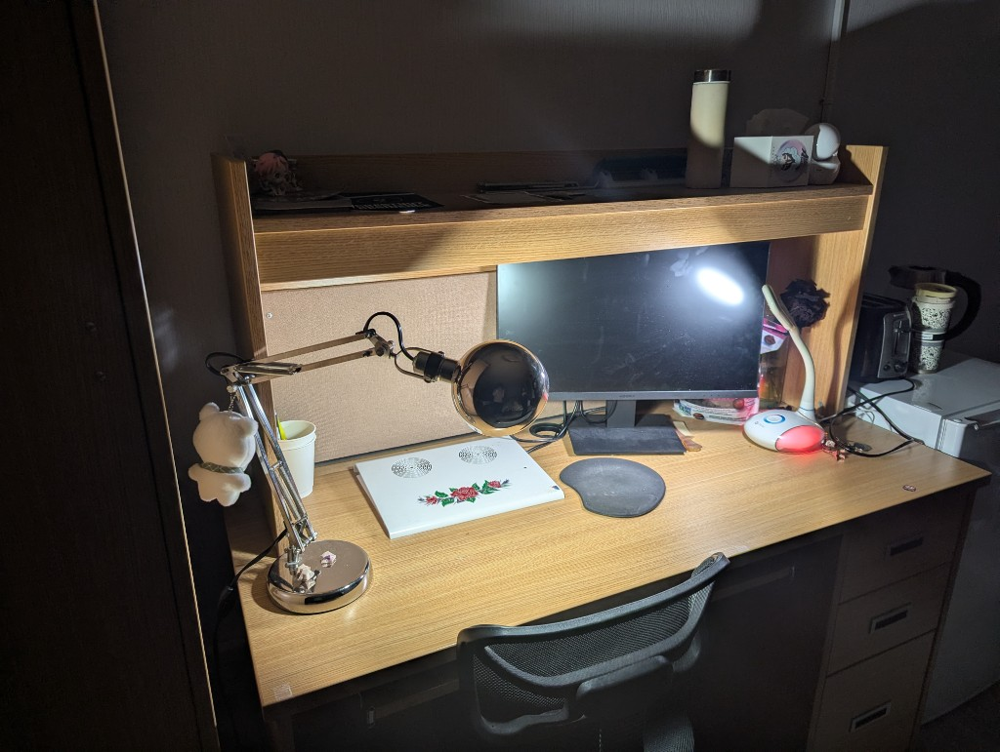
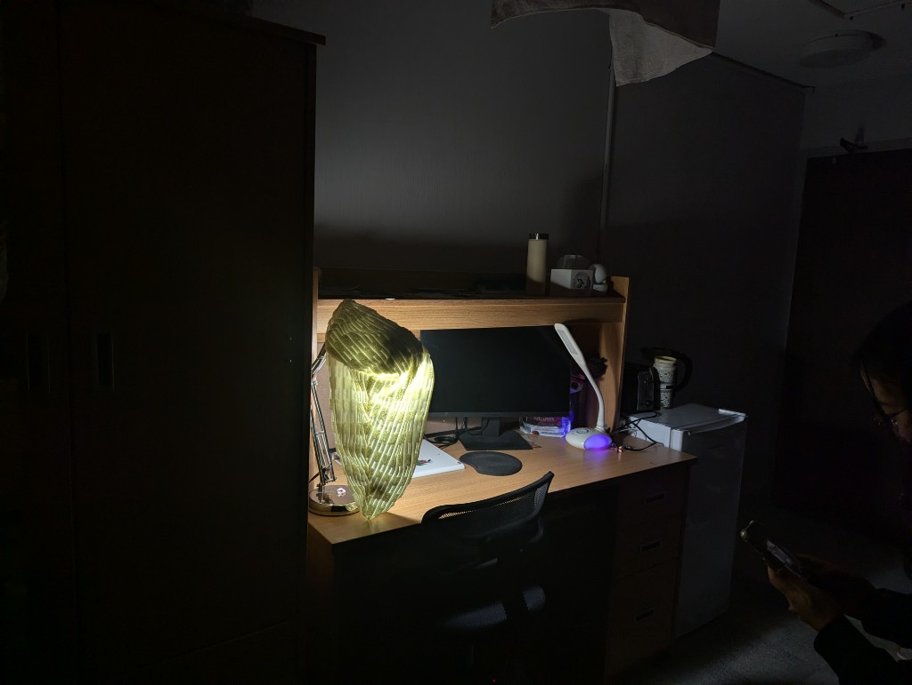

Videos: with vs without lamp control
Measurement matrix and Pugh chart
Deploy time used reference motions (stroller canopy unfold, roller blind, lecture-hall desk unfold). Weight used material estimates (Appendix C) or catalog data (IKEA room divider). EC 4.1 was not scored in the matrix because every concept except the divider uses negligible floor area when stowed.
| Concept | EC 1.1 direct (lux) | EC 1.2 indirect (lux) | EC 3.1 setup (s) | EC 3.2 weight (g) |
|---|---|---|---|---|
| Bed Dome Cover | 2.9 | 1.2 | 3–5 | 920* |
| Lamp Cover | 7.0 | 1.7 | 0 | 400* |
| Room Divider | 2.4 | 1.4 | ~5 | 4960 |
| Bathroom Extension | 0.5 (max) | 0 | ~5 | 2700* |
*Estimated from reference materials and calculations in the report appendix. Raw lux traces are in Appendix B of the PDF.
| Evaluation criterion | Lamp cover | Bed dome | Room divider | Bathroom ext. |
|---|---|---|---|---|
| EC 1.1: Direct illuminance — the lower the better. High priority | − | datum | + | + |
| EC 1.2: Indirect illuminance (ceiling) — the lower the better. High priority | − | − | + | |
| EC 3.1: Setup time for routine use — the lower the better. | + | − | − | |
| EC 4.2: Weight — the lighter the better. | + | − | − | |
| Total | 2+ / 2− | 0 | 2− / 2 N/A | 2+ / 2− |
On illuminance alone, the bathroom extension wins. We still ranked the bed dome ahead because we had no comfort metric for the studying roommate, and the bathroom layout failed several BIFMA-style ergonomics checks (seat height 37 cm vs 38.1–50 cm recommended, seat depth too long, seat width too narrow). Forcing a roommate to study on a toilet seat is also a relationship risk we were not willing to ignore.
Final recommended design
The bed dome balances darkness, weight, and roommate equity. At ~920 g it is far lighter than a 4.96 kg divider panel, deploys in a few seconds once clamped, and shields the sleeper without kicking the studier out of the room. Our blanket proxy already hit 2.9 / 1.2 lux on EC 1.1 and 1.2; the report argues commercial blackout PP fabric (e.g. Multiblock® 425) and a tighter seal would close the gap to the 1 lux requirement line.
Major design decisions
- Polypropylene blackout fabric: low density (~0.905 g/cm³), good tensile strength, blocks light without a floor footprint.
- Rubber-lined clamps: attach to the Chestnut headboard rail; modeled clamp force ~134 N (~0.084 MPa), well below steel yield, to satisfy Residence Life on “no permanent damage.”
- Foldable hinge: stroller-inspired geometry stows above the bed for cleaning access and keeps deploy time inside EC 3.1.
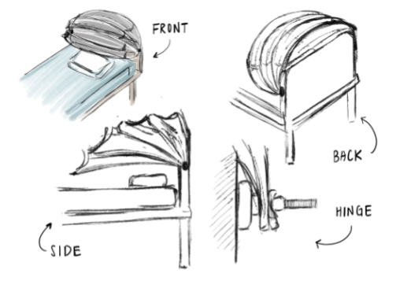
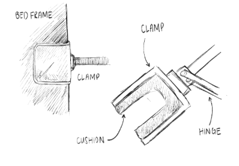
What I took away
This was the Alpha Release cycle in Praxis I: NGOs and requirements before CAD beauty renders, diverging tools that actually changed the solution set, and proxy tests that were honest about uncertainty. The lamp cover videos and towel-on-ceiling photos are rough, but they convinced us that redirecting flux is not the same as protecting a sleeper’s eyes. The Pugh numbers pushed us to articulate why “winning” illuminance in the bathroom still lost on human factors.
The full PDF (references, appendix lux tables, weight derivations, and alternate Pugh charts) is the archival version. This page is the portfolio walkthrough with the tables and media we would show at a critique. For the Year 1 portfolio’s process reflection on the same term, see Year 1 Student Engineering Design Portfolio.